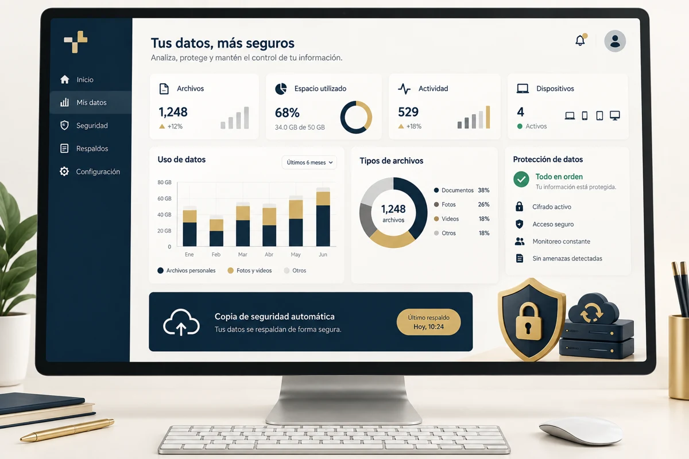

TUPLUS / DATOS Y SEGURIDAD
Información útil. Operación protegida.
Datos, analítica, protección y continuidad para acompañar tus procesos digitales.
Conversemos sobre datos y seguridad ↗
TU PUNTO DE PARTIDA
Una solución para una necesidad real.
Cuando necesitas comprender tu información y revisar cómo proteger tu operación.
Qué podemos trabajar contigo
- Organización y análisis de datos
- Visualización de información
- Protección y continuidad
Qué recibe tu negocio
Un alcance de datos o seguridad definido a partir de un diagnóstico; entregables y límites acordados antes de comenzar.
UN ALCANCE QUE DEFINIMOS CONTIGO
Del diagnóstico a la entrega.
- 01
Entender
Revisamos tu contexto y definimos el alcance antes de construir.
- 02
Construir
Diseñamos y desarrollamos con revisiones acordadas.
- 03
Validar
Probamos y documentamos la entrega para su aprobación.
¿Qué necesitan para definir una propuesta?
Tu objetivo, el contexto del negocio y las funciones que necesitas. Revisamos contigo los contenidos, herramientas e integraciones involucradas.
¿Qué precio y plazo tendrá mi proyecto?
Dependen del alcance acordado. No se consideran confirmados hasta revisar la propuesta comercial. Cuéntanos tu necesidad para preparar una evaluación.
¿Cómo puedo conocer el enfoque de trabajo?
Consulta nuestra sección Cómo trabajamos, que presenta el diagnóstico, diseño, desarrollo, pruebas y entrega.
Ver metodología →